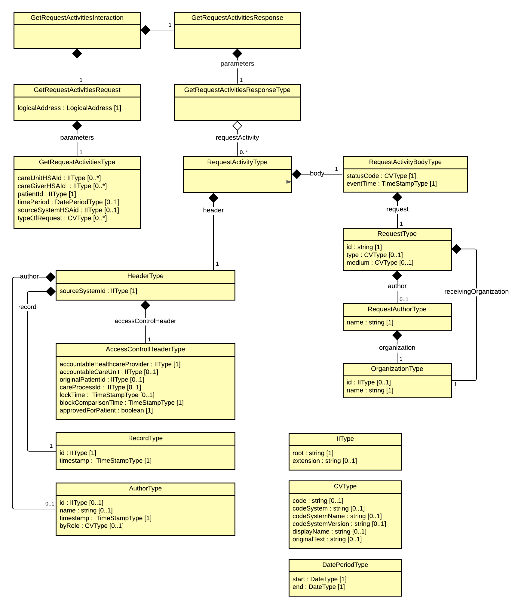

crm: requeststatus
2.0.1 - draft
crm: requeststatus - Local Development build (v2.0.1) built by the FHIR (HL7® FHIR® Standard) Build Tools. See the Directory of published versions
Här beskrivs de modeller som beskriver informationsinnehållet i tjänstekontrakten inom tjänstedomänen.

Klassen i modellen med streckade linjer runt visar begäran och resten visar svaret. De klasser som är gråa är information som finns i den gemensamma headern, men är inte aktuella för detta tjänstekontrakt. Meddelandemodellen visar den struktur som tjänstekontraktet har med dess header och body. Informationsmodellen i informationsspecifikationen visar behoven och har inte samma struktur som meddelandet. Tabellen nedan visar en mappning mellan informationen i meddelandemodellen (MIM:en) och informationen som den visas i informationsmodellen i informationsspecifikationen [R3]. Där mappning saknas har behoven ej framkommit vid framtagning av informationsmodellen utan är information som finns med tack vare den gemensamma headern som används eller som är av mer teknisk karaktär. Meddelandemodellen är en identisk representation av schemat och någon mappning mot schemat behövs därför inte i tabellen nedan.| Klass.attribut i MIM | Mappning mot klass och attribut i informationsmodellen |
|---|---|
| HeaderType | |
| sourceSystemId | - |
| AccessControlHeaderType | - |
|---|---|
| accountableHealthcareProvider | vårdgivare.id |
| accountableCareUnit | vårdenhet.id |
| originalPatientId | patient.id |
| careProcessId | - |
| lockTime | - |
| blockComparisonTime | - |
| approvedForPatient | remisstatus.utlämnas till patient |
| RecordType | - |
|---|---|
| id | remisstatus.id |
| timeStamp | - |
| AuthorType | Beror på vem som sätter statusen. Kan vara Remittent, Remissmottagande person eller remissbesvarande person |
|---|---|
| id | |
| name | remittent.namn, remissmottagande person.namn, remissbesvarande person.namn |
| timestamp | - |
| byRole | - |
| RequestActivityBodyType | - |
|---|---|
| statuscode | remisstatus.status |
| eventTime | remisstatus.händelsetidpunkt |
| RequestType | Remiss |
|---|---|
| Id | id |
| type | remisstyp |
| medium | medium |
| RequestAuthorType | Remittent |
|---|---|
| name | namn |
| OrganizationType | Remissmottagande enhet / Remitterande enhet |
|---|---|
| id | Remissmottagande enhet.vårdenhet.id / Remitterande enhet.vårdenhet.id |
| name | Remissmottagande enhet.vårdenhet.namn / Remitterande enhet.vårdenhet.namn |
Datum anges på formatet ”ÅÅÅÅMMDD”. Detta motsvarar den ISO 8601 och ISO 8824-kompatibla formatbeskrivningen ”YYYYMMDD”. Tidpunkter anges alltid på formatet ”ÅÅÅÅMMDDttmmss”, vilket motsvarar den ISO 8601 och ISO 8824-kompatibla formatbeskrivningen ”YYYYMMDDhhmmss”.
Tidszon anges inte i meddelandeformaten. All information om datum och tidpunkter som utbyts via tjänsterna ska ange datum och tidpunkter i den tidszon som gäller/gällde i Sverige vid den tidpunkt som respektive datum- eller tidpunktsfält bär information om. Såväl tjänstekonsumenter som tjänsteproducenter ska med andra ord förutsätta att datum och tidpunkter som utbyts är i tidszonerna CET (svensk normaltid) respektive CEST (svensk normaltid med justering för sommartid).
Personnummer anges enligt format ÅÅÅÅMMDDNNNN.
Samordningsnummer anges enligt format ÅÅÅÅMMDDNNNN. De inledande sex siffrorna utgår från personens födelsetid (år, månad och dag). Därefter följer ett tresiffrigt individnummer som motsvarar födelsenumret i ett personnummer. Individnumret hämtas slumpvis ur en serie 001-999 för alla som är födda samma dag. Numret är udda för män och jämnt för kvinnor. Siffran för födelsedag ökas med talet 60 och en kontrollsiffra beräknas på samma sätt som för ett personnummer. Exempel Samordningsnummer för en man som är född den 3 oktober 1970 och har individnummer 239 blir 19701003 +60 ————— 197010632391
Format för lokala reservnummer: Olika format för varje landsting/region och därmed krav på flexibel hantering. Några exempel på reservnummer i olika regioner: 201612345678, 19521234TA3C, 20081234-0123, 123456-DA0A, 123456789A.